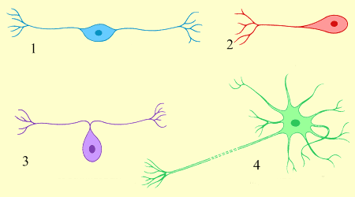

Галерея
Изображения к главе 1 «Филогенез нервной системы» Изображения к главе 2 «Онтогенез нервной системы» Изображения к главе 3 «Спинной мозг» Изображения к главе 4 «Головной мозг» Глава 1 Филогенез нервной системы
Рис 1. Сетевидная нервная система гидры: 1 - восприятие раздражения, 2 - передача возбуждения от раздражения, 3 - ответ организма на раздражение.(Doklad-Referat.ru )
Рис 2.Узловая нервная система плоских червей: 1 - головной нервный узел, 2 - продольные нервные стволы, 3 - поперечные нервные стволы.(megabook.ru )
Рис 3. Трубчатая нервная система рыб: 1 - головной мозг, 2 - спинной мозг, 3 - нервы.(onlinebiology.ru )
Глава 2 Онтогенез нервной системы
Рис 4. Кора больших полушарий: 1 - латеральная борозда, 2 - центральная борозда, 3 - теменно - затылочная борозда, 4 - мозжечок.
Теменная доля. Височная доля. Лобная доля. (Источник: Википедия, статья "Кора больших полушарий.")
Глава 3 Спинной мозг
Рис 5. Поперечный разрез спинного мозга: 1 – мягкая оболочка спинного мозга, 2 – задняя срединная борозда, 3 – задняя промежуточная борозда, 4 – задний корешок (чувствительный), 5 – задняя латеральная борозда, 6 – терминальная зона, 7 – губчатая зона, 8 – студенистое вещество, 9 – задний рог, 10 – боковой рог, 11 – зубчатая связка, 12 – передний рог, 13 – передний корешок (двигательный), 14 – передняя спинномозговая артерия, 15 – передняя срединная щель (Сапин, Билич, 1989)
Рис 5.1 Схематическое строение спинного мозга и позвоночного нерва.(vertebra.su )

Рис 5.2 Виды нейронов по колличеству отростков: 1 - биполярный, 2 - униполярный, 3 - псевдоуниполярный, 4 - мультиполярный.
Рис 5.3 Структура нейрона: 1 - дендрит, 2 - клеточное тело, 3 - ядро, 4 - аксон, 5 - миелиновая оболочка, 6 - клетка Шванна, 7 - концевая ветвь (терминаль) аксона, 8 - перехват Ранвье.
Рис 5.4 Внешнее строение спинного мозга: 1 - продолговатый мозг, 2 - шейное утолщение, 3 - передняя срединная щель, 4 - передняя латеральная борозда, 5 - пояснично-крестцовое утолщение, 6 - мозговой конус.
Рис 6. Спинной мозг и его оболочки; поперечный разрез позвоночного столба. 1 – твердая оболочка; 2 – эпидуральное пространство; 3 – паутинная оболочка; 4 – задний корешок; 5 – передний корешок; 6 – спинальные ганглии; 7 – спинномозговой нерв; 8 – подпаутинное пространство; 9 – зубчатая связка (Сапин, 1993).
Глава 4 Головной мозг
Рис 7. Медиальный срез головного мозга: 1 - гипоталамус, 2 - полость третьего желудочка, 3 – передняя спайка, 4 – свод мозга, 5 – мозолистое тело, 6 – межталамическое сращение, 7 – таламус, 8 – эпиталамус, 9 - средний мозг, 10 - мост, 11 – мозжечок, 12 – продолговатый мозг (Сапин, Билич, 1989)
Рис 8. Основание головного мозга: 1 — лобные доли; 2 — обонятельный тракт; 3 — зрительный нерв; 4 — височная доля; 5 — глазодвигательный нерв; 6 — блоковой нерв; 7 — мост; 8 — тройничный нерв; 9 — отводящий нерв; 10 — лицевой и преддверно-улитковый нервы; 11 — языкоглоточный нерв; 12 — блуждающий нерв; 13 — добавочный нерв; 14 — мозжечок; 15 — затылочные доли; 16 — пирамиды; 17 — подъязычный нерв; 18 — сосцевидное тело; 19 — серый бугор и воронка; 20 — зрительный перекрест.(Сапин, 1993)
Рис 9. Мозжечок: А - вид сверху, В - вид снизу: 1 - полушария, 2 - червь, 3 - горизональная щель ножки мозжечка, 4 - первичная щель, 5 - вторичная щель, 6 - задняя латеральная щель, 7 - долинка, 8 - верхние ножки мозжечка, 9 - средние ножки мозжечка, 10 - нижние ножки мозжечка, 11 - язычок мозжечка, 12 - связочная извилина, 13 - центральная, 14 - крылья центральной дольки, 15 - вершина горки, 16 - передняя четырехугольная, 17 - скат, 18 - задняя четырехугольная, 19 - листок, 20 - верхняя полулунная, 21 - бугорок, 22 - нижняя полулунная, 23 - пирамида, 24 - тонкая, двубрюшная, 26 - миндалина, 25 - втулочка, 28 - клочок, ножка, околоклочок, 27 - узелок.
Рис 10. Схема строения коры мозжечка: 1 - молекулярный слой, 2 - ганглиозный слой, 3 - зернистый слой, 4 - белое вещество, 5 - клетки Пуркинье, 6 - дендриты кл.Пуркинье, 7 - аксоны кл.Пуркинье, 8 - клетки Гольджи, 9 - звездчатые клетки, 10 - моховидные волокна, 11 - лиановидные волокна.
Рис 11. Связи мозжечка.
Рис 12. Задняя поверхность моста и продолговатого мозга. Проекция ядер черепных нервов на ромбовидную ямку: 1 – ядро Якубовича, 2 – ядро глазодвигательного нерва, 3 – ядро блокового нерва, 4 – ядро среднемозгового пути тройничного нерва, 5 – двигательное ядро тройничного нерва, 6 – мостовое ядро тройничного нерва, 7 – ядро отводящего нерва, 8 – ядро лицевого нерва, 9 – ядра преддверно-улиткового нерва, 10 – лицевой нерв, 11 – слюноотделительные ядра, 12 – преддверно-улитковый нерв, 13 – языкоглоточный нерв, 14 – ядро подъязычного нерва, 15 – двойное ядро, 16 – блуждающий нерв, 17 – ядро спинномозгового пути тройничного нерва, 18 – ядро одиночного тракта, 19 – добавочный нерв, 20 – дорзальное ядро блуждающего нерва, 21 – ядро добавочного нерва, 22 – задвижка, 23 – задняя срединная борозда, 24 – тонкий пучок, 25 – клиновидный пучок, 26 – бугорок Голля, 27 – треугольник блуждающего нерва, 28 – срединная борозда ромбовидной ямки, 29 – мозговые полоски, 30 – нижний мозговой парус (отвернут), 31 - вестибулярное поле, 32 – средняя ножка мозжечка, 33 – лицевой бугорок, 34 – верхняя ножка мозжечка, 35 – срединное возвышение, 36 – верхний мозговой парус (отвернут) (Сапин, билич, 1989)
Рис 13. Поперечный разрез среднего мозга: 1 – крыша среднего мозга, 2 – покрышка среднего мозга, 3 – основание ножки мозга, 4 – красное ядро, 5 – черная субстанция, 6 – ядро глазодвигательного нерва, 7 – ядро Якубовича, 8 - перекрест покрышки, 9 – глазодвигательный нерв, 10 – лобно-мостовой путь, 11 – корково-ядерный путь, 12 – пирамидный путь, 13 - затылочно-височно-темнно-мотовой путь, 14 – медиальная петля, 15 – ручка нижнего холмика, 16 – ядро среднемозгового пути тройничного нерва, 17 - верхний холмик, 18 – водопровод среднего мозга, 19 – центральное серое вещество (Сапин, Билич, 1989)
Рис.14 Гипоталамус(подбугорье): 1 - промежуточная масса таламуса, 2 - дорсомедиальное ядро, 3 - заднее ядро гипоталамуса, 4 - вентромедиальное ядро, 5 - сосцевидное тело, 6 - дуговидное ядро, 7 - воронка, 8 - гипофиз, 9 - оптическая хиазма, 10 - оптический (2) нерв, 11 - супраоптическое ядро, 12 - супрахиазмотическое ядро, 13 - переднее ядро гипоталамуса, 14 - медиальное преоптическое ядро,15 - латеральное преоптическое ядро, 16 - паравентрикулярное ядро, 17 - мозолистое тело.
Рис 16. Вид зрительных бугров человека с проекцией ядер сверху (а), сбоку (б) и сзади (в): 1 – внутренняя медуллярная полоска; 2 – межбугровое сращение; 3 – передняя группа ядер; 4 – медиальные ядра; 5 – промежуточная масса и ядра средней линии (Лупандин, Сурнина, 2001)
Примечание. На рис.16,в фронтальный срез правого таламуса проведен ростральнее, левого - каудальнее для более полного представления топографии и взаимного расположения таламических ядер.
Рис 17. Верхнелатеральная поверхность полушария большого мозга: 1 – лате-ральная борозда, 2 – покрышечная часть, 3 – треугольная часть, 4 – глазничная часть, 5 – нижняя лобная бо¬розда, 6 – нижняя лобная извилина, 7 – верхняя лобная борозда, 8 – средняя лобная извилина, 9 – верхняя лобная извилина, 10-11 – предцентральная борозда, 12 – предцентральная извилина, 13 – центральная борозда, 14 – постцентральная извилина, 15 – внутритеменная борозда, 16 – верхняя теменная долька, 17 – нижняя теменная долька, 18 – надкраевая извилина, 19 – угловая извилина, 20 – затылочный полюс, 21 – нижняя височная борозда, 22 – нижняя височная извилина, 23 – средняя височная извилина, 24 – верхняя височная извилина, 25 – верхняя височная борозда (Сапин, 1993)
Рис 18. Борозды и извилины медиальной и нижней поверхностей правого полушария большого мозга: 1 – свод, 2 – клюв мозолистого тела, 3 – колено мозолистого тела, 4 – ствол мозолис¬того тела, 5 – борозда мозолистого тела, 6 – поясная извилина, 7 – верхняя лобная извилина, 8 – поясная борозда, 9 – парацентральная долька, 10 – поясная борозда, 11 – предклинье, 12 – теменно-затылочная борозда, 13 – клин, 14 – шпорная борозда, 15 – язычная извилина, 16 – медиальная затылочно-височная извилина, 17 – заты-лочно-височная борозда, 18 – латеральная затылочно-височная извилина, 19 – борозда гиппокампа, 20 – парагиппокампальная извилина (Сапин, 1993)
Рис 19. Борозды и извилины нижней поверхности полушария большого мозга: 1 – прямая извилина, 2 – обонятельная борозда, 3 – глазничные борозды, 4 – глазничные извилины, 5 – переднее продырявленное вещество, 6 – затылочно-височная борозда, 7– латеральная затылочно-височная извили¬не, 8 – медиальная затылочно-височная извилина, 9 – коллатеральная бо¬розда, 10 – борозда гиппокампа (гиппокампальная борозда), 11 – язычная извилина, 12 – шпорная борозда, 13 – парагиппокампальная извилина (извилина гиппокампа), 14 – крючок (Сапин, 1993)
Рис 19.1 Борозды и извилины. Верхнелатеральная поверхность полушария большого мозга: 1 - постцентральная борозда; 2 - постцентральная извилина; 3 - центральная борозда; 4 - предцентральная извилина; 5 - верхняя лобная извилина; 6 - верхняя лобная борозда; 7 - средняя лобная извилина; 8 - глазничная часть; 9 - нижняя лобная борозда; 10 - нижняя лобная извилина; 11 - верхняя височная извилина; 12 - латеральная (боковая) борозда; 13 - верхняя височная извилина; 14 - верхняя височная борозда; 15 - нижняя височная борозда; 16 - средняя височная извилина; 17 - нижняя височная извилина; 18 - затылочный полюс; 19 - угловая извилина; 20 - нижняя теменная долька; 21 - внутритеменная борозда; 22 - верхняя теменная долька
Рис 20. Строение коры головного мозга: 1 - молекулярный слой, 2 - наружный зернистый, 3 - пирамидальный, 4 - внутренний зернистый, 5 - внутренний пирамидный, 6 - полиморфный, 7 - белое вещество.
Рис 20.1 Поля по Бродману: 3,1,2 – соматосенсор-ная кора; 4,6 – моторная кора; 41,42 – слуховая кора; 17,18,19 – зрительная кора; 43 – вкусовая кора; 22 – зона Вернике; 44 – зона Брока; 39 – зрительный центр письменной речи; 40 – моторный центр письменной речи; 5,7 – ТАК; 37 – НВК; 8-11,46 - ЛАК.
Рис 21. Основные зоны коры больших полушарий мозга человека: а – дорсола-теральная поверхность; б – медиальная поверхность большого полушария; 1 – моторная кора; 2 – соматосенсорная кора; 3 – зрительная кора; 4 – слуховая кора; 5-7 – ассоциативные области (5 – теменная; 6 – лобная; 7 – нижневисочная) (Лупандин, Сурнина, 2001)
Рис 22. Корковый центр общей чувствительности (чувствительный «гомункулюс») (из В. Пенфилда и И. Расмуссена) (Сапин, Билич, 1989)
Рис 23. Двигательная область коры (двигательный «гомункулюс») (из В. Пенфилда и И. Расмуссена) (Сапин, Билич, 1989)
Рис 24. Горизонтальный разрез головного мозга. Базальные ядра: 1 – кора большого мозга (плащ), 2 – колено мозолистого тела, 3 – передний рог бокового желудочка, 4 – внутренняя капсула, 5 – наружная капсула, 6 – ограда, 7 – самая наружная капсула, 8 – скорлупа, 9 – бледный шар, 10 –III желудочек, 11 – задний рог бокового желудочка, 12 – зрительный бугор, 13 – корковое вещество (кора) островка, 14 – головка хвостатого ядра, 15 – полость прозрачной перегородки (Сапин, Билич, 1989)
Рис 25. Свод мозга.
Рис 26. Схема. Желудочки мозга. (из Р.Д.Синельникова): 1 - левое полушарие головного мозга, 2 - боковые желудочки, 3 - третий желудочек, 4 - водопровод среднего мозга, 5 - четвертый желудочек, 6 - мозжечок, 7 - вход в центральный канал спинного мозга, 8 - Спинной мозг. (Сапин, Билич, 1989)
Рис 27. Твердая оболочка головного мозга, dura mater: 1 – серп большого мозга; 2 – прямой синус; 3 – намет мозжечка; 4 – диафрагма турецкого седла; 5 – n. opticus et a. carotis interna (Сапин, 1993)
Рис 28. Взаимоотношение оболочек головного мозга и верхнего гиттального синуса со сводом черепа и поверхностью головного мозга разрез во фронтальной плоскости (схема): 1 – твердая оболочка мозга; 2 – свод черепа; 3 – грануляции паутинной оболочки; 4 – верхний сагиттальный синус; 5 – кожа; 6 – эмиссарная вена; 7 – паутинная оболочка; 8 – подпаутинное пространство; 9 – мягкая оболочка; 10 – головной мозг; 11 – серп большого мозга (Сапин, 1993)
Рис 29. Отростки и синусы твердой оболочки головного мозга: 1 - пещеристый синус; 2 - нижний каменистый синус; 3 - верхний каменистый синус; 4 - сигмовидный синус; 5 - затылочный синус; 6 - поперечный синус; 7 - верхний сагиттальный синус; 8 - прямой синус; 9 - нижний сагиттальный синус; 10 - серп большого мозга; 11 - намет мозжечка (Сапин,1993)